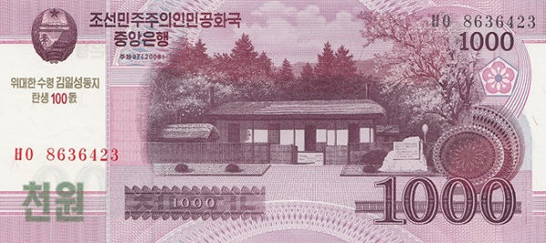

КНДР - Северокорейская вона
5 вон
Лицевая сторона - профессор и студент
Обратная сторона - Супхунская ГЭС
10 вон
Лицевая сторона - лётчик, матрос и солдат
Обратная сторона - монумент победы в корейской войне
50 вон
Лицевая сторона - члены ТПК и рабочий
Обратная сторона -монумент в честь основания ТПК в Пхеньяне
100 вон
Лицевая сторона - цветок магнолии
Обратная сторона - номинал
200 вон
Лицевая сторона - монумент Чхоллима
Обратная сторона - номинал
500 вон
Лицевая сторона - Триумфальная арка в Пхеньяне
Обратная сторона - номинал
1000 вон
Лицевая сторона - Родной дом Ким Ир Сена в Мангёндэ
Обратная сторона - Озеро Самджиён
2000 вон
Лицевая сторона - Пик Чонильбон и родной дом Ким Чен Ира в Пэктусанском тайном лагере
Обратная сторона - Горы Пэкту
5000 вон
Лицевая сторона - Ким Ир Сен
Обратная сторона - Родной дом Ким Ир Сена в Мангёндэ